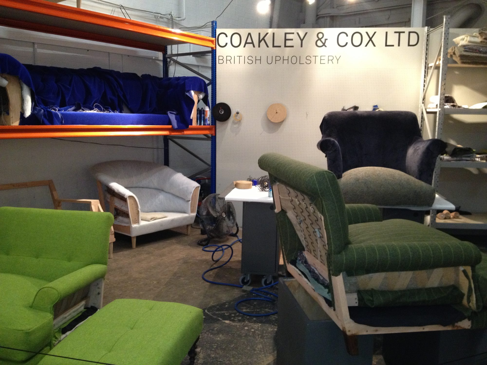
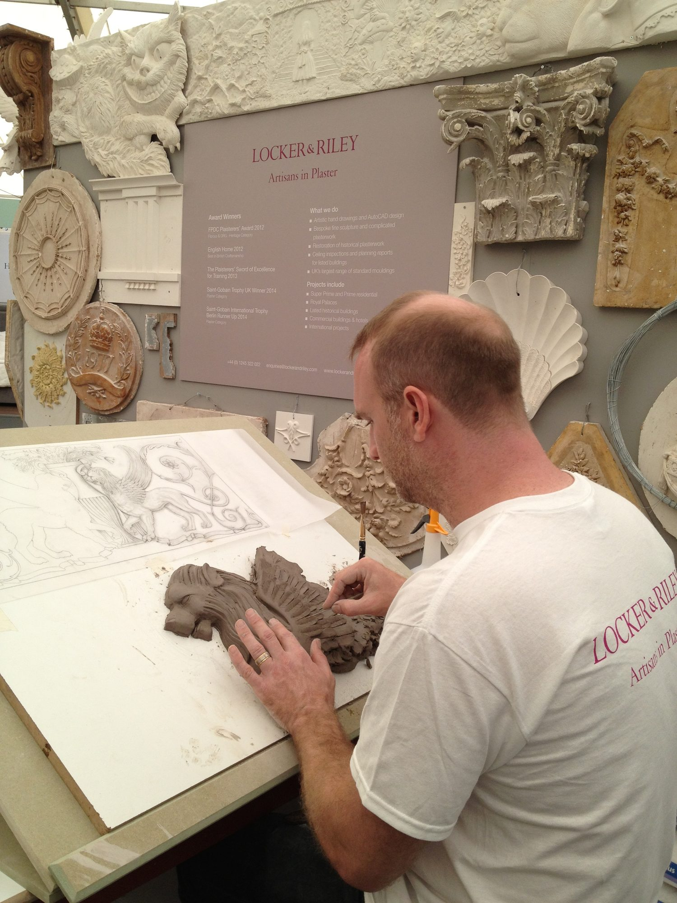
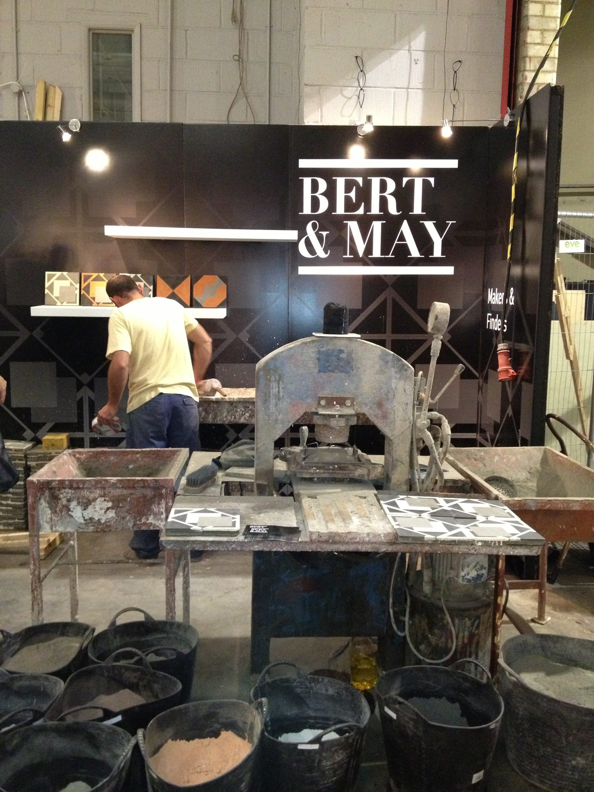
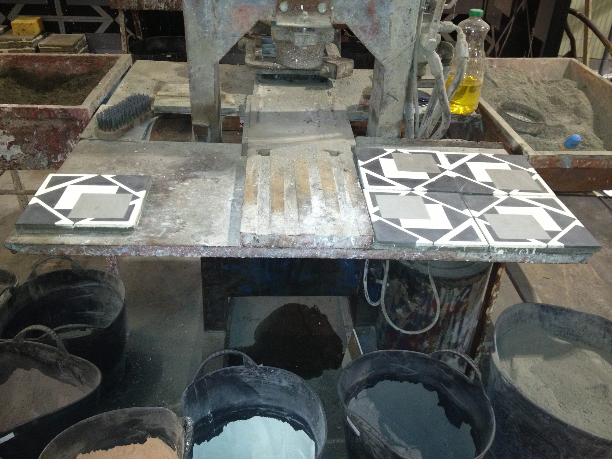
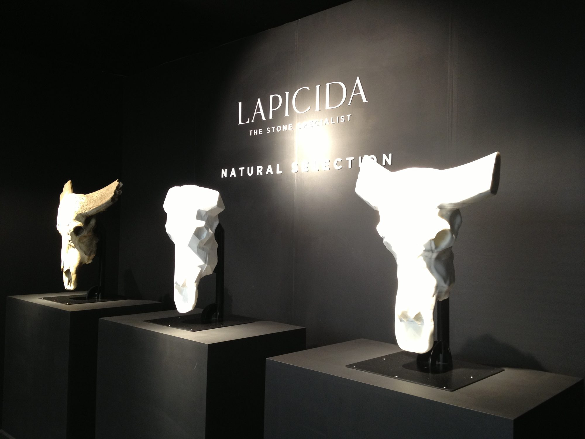
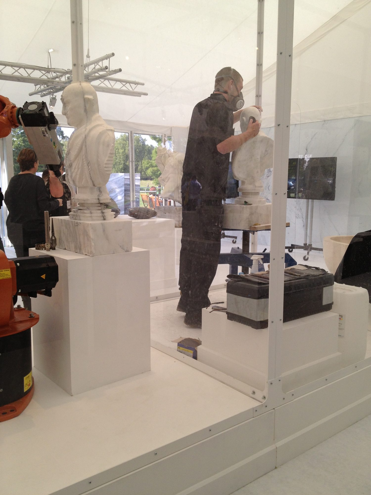
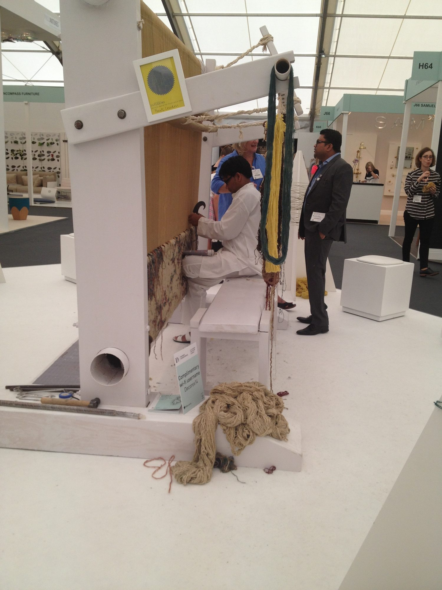
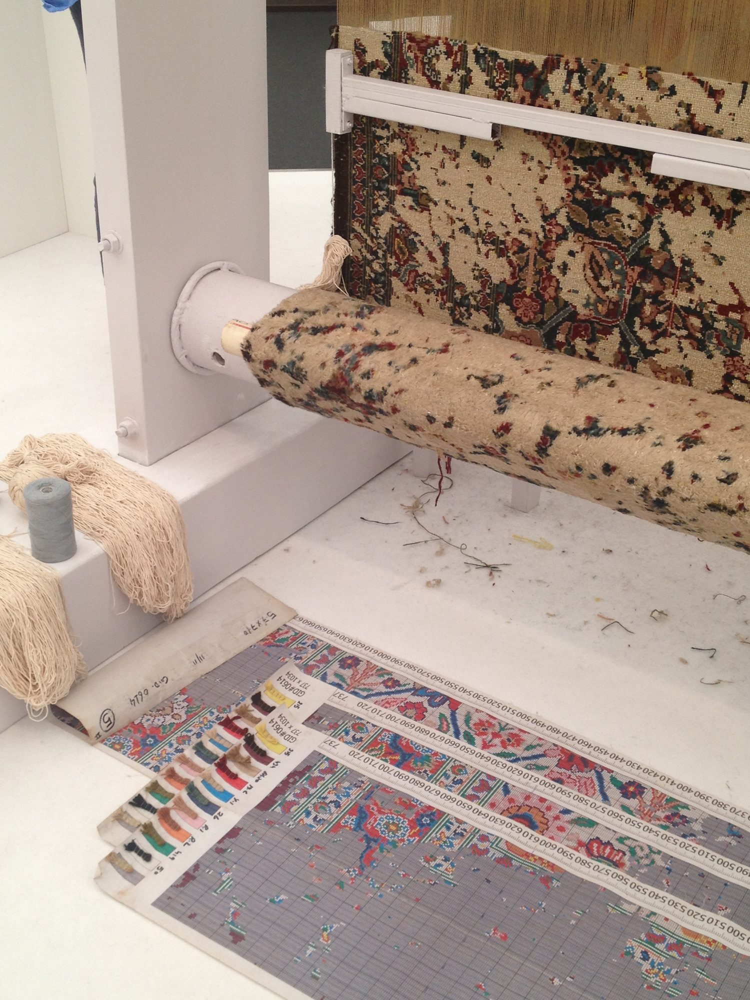
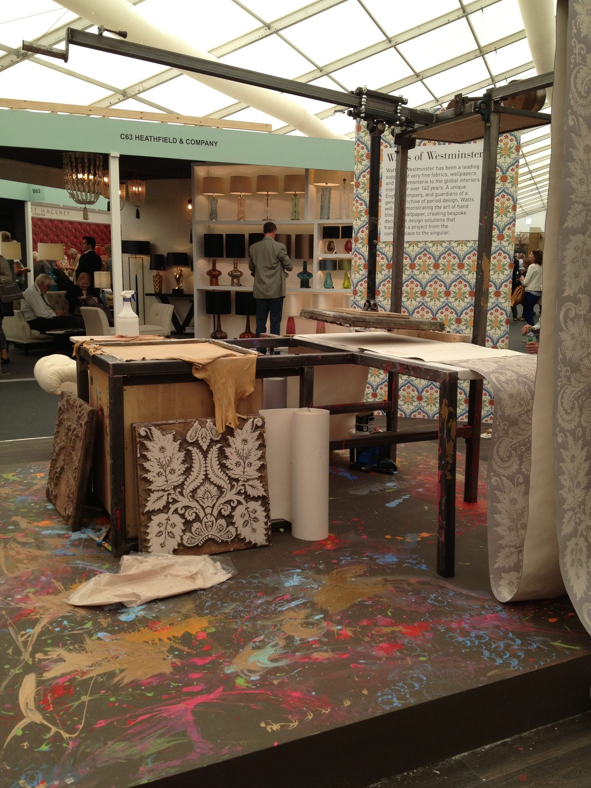

This past fall, London felt saturated in design with numerous shows and exhibits scattered throughout the city …… Decorex, designjunction and Focus 14, along with a special show at the Victorian & Albert Museum…..creativity filled the city for nearly two weeks. Designers from all over the world were there to exhibit and to attend. The energy was high and the sharing of ideas was invigorating. It was an experience…..and it is the experience that makes design shows so valuable.
An amazing range of designers were present at every venue….from new start ups looking for exposure with hopes of a first order, to those well established firms looking to present themselves in a new way. The spectacular displays and array of exquisite pieces were captivating…. conversation with artists, artisans and representatives, each telling their unique story was equally fascinating and made the package complete.
After viewing hundreds of exhibits with thousands of products, along with countless conversations…..sorting through catalogs, business cards and photographs collected along the way…..what will embrace our design vision and what will expand our vision, the distance of time allows the experience to simmer and the highlights to truly stand out.
Generally, design shows are all about the new collections; however, beyond the fabulous products seen at every turn and the latest introductions in textiles, lighting and furnishings that kept the shows buzzing, there was a small component that offered something more.
A unique portion of the London shows was the exhibit dedicated to “the making”. Having the opportunity to look behind the scenes on how many of these exquisite objects are actually “made” was quite compelling.
Mini workrooms, ranging from upholstery to decorative cement tiles, were set up to produce some incredible pieces from start to finish. Various artisans shared how materials are prepared, while demonstrating their meticulous attention to detail as well as their skill and dedication to these often lengthy and complex processes. Some techniques seemed virtually unchanged over time while others benefited from new technologies and materials. It was an intriguing juxtaposition of old and new, offering yet another level of appreciation for what makes beautifully-designed pieces so exceptionally wonderful.
It was an experience……one that encompassed all that makes design shows a valuable experience. Please join us for a glimpse of “the making.”
Upholstery:

Upholstery in its many layers and phases. A look inside the frame, the webbing and the padding. Adding the layer of padding in a modern material designed to mimic horsehair….the premium fill of years gone by. Luxury.
{kind=link}

Layering and layering…….nearing completion with an array of jewel tone fabrics.
Architectural Moldings:
{kind=link}

Intricate artistry……a beautiful rendering of a fanciful figure (seen upper right) as it is being carefully transformed by the artist into the clay model. Although there are many more stages before reaching the final piece… we can imagine the elegance this molding will add to the architecture…
Cement Tiles:
{kind=link}

It is an elaborate and lengthy process…..casting decorative cement tiles one by one, set in a mold. How do those buckets of ground color become beautifully pristine tile? The artisan hard at work preparing……
{kind=link}

Detail of the press, the ground colors and the completed tiles. Incredibly smooth in a perfectly geometric pattern.
Stonecutters:
{kind=link}

Inspiration……Creation. The entrancing entrance to Lapicida…..beyond was a grand tour of the world of stone……dimly lit specimens glowed in the darkness as if they had risen from the earth. Spectacular.
{kind=link}

High tech meets the laborious world of sculpting in stone. A rare experience to see this work in action…..one could only imagine the sculptors through time creating.
Woven Rugs:
{kind=link}

Seated at the loom, the artist is meticulously following an intricate rug pattern row by row……..with steady work a completed piece can take upwards of 6 months or more.
{kind=link}

Detail of a portion of the rug on the loom….a complex modern design……one that is incredibly intricate and complicated to hand weave. The pattern guide and color chart are shown below. Amazing.
Wallcovering:
{kind=link}

Hand-blocked wallcovering….slowly, slowly a roll is created….block by block
precisely inked and pressed to the paper, creating a delicate subtlety in the color and pattern. Soothing results.
Next stop: Paris Maison&Object January 2015. Stay tuned.